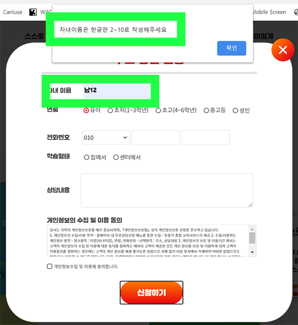
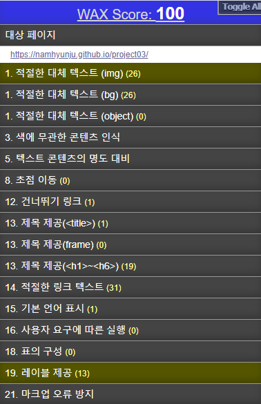

REPORT
- 1. 인식의 용이성
- 2. 운용의 용이성
- 3. 이해의 용이성
- 4. 견고성
1.1 적절한 대체 텍스트 제공

텍스트 아닌 콘텐츠에는 대체 텍스트를 제공해야 한다.
- ① 이미지 등 텍스트가 아닌 콘텐츠를 이용할 경우, 그 의미나 용도를 해당 이미지와 동등하게 인식할 수 있도록 적절한 대체 텍스트를 간단명료하게 제공해야 한다.
- ② 단순히 장식이나 시각적인 형태를 위해 사용되는 콘텐츠의 경우, 보조 기술을 통해 해당 설명을 제공받을 때 오히려 혼란을 일으킬 가능성이 있으므로 대체 텍스트를 공백문자로 제공하는 것이 바람직하다.
콘텐츠는 명확하게 전달되어야 한다.
- ① 웹 페이지에 보이는 핵심 텍스트 콘텐츠와 배경 간의 충분한 대비를 제공하여 저시력자, 색각 이상자, 고령자 등도 콘텐츠를 인식할 수 있도록 제공해야 한다.
- ② 다른 감각을 통해서도 지시사항을 인식하는 데 문제가 없도록 제공해야 한다.
- ③ 지시 사항은 모양, 크기, 위치, 방향, 색, 소리 등에 관계없이 인식될 수 있어야 한다.
- ④ 이웃한 콘텐츠는 구별될 수 있어야 한다.
2.1 입력장치 접근성
 2.4 쉬운 내비게이션
2.4 쉬운 내비게이션

콘텐츠는 키보드로 접근할 수 있어야 한다.
- ① 사용자가 키보드의 버튼 입력만으로도 동등하게 사용할 수 있도록 해야 한다.
- ② 키보드 내비게이션 과정에서 키보드 초점을 받은 링크, 컨트롤 및 입력 서식은 초점을 받지 않은 객체들로부터 구분될 수 있어야 한다.
- ③ Tab 키와 Shift + Tab 키에 의한 초점의 이동 순서는 논리적이며 일관성이 있어야 한다.
콘텐츠를 읽고 사용하는 데 충분한 시간을 제공, 자동으로 변경되는 콘텐츠는 움직임을 제어할 수 있어야 한다.
- ① 시간제한이 있는 콘텐츠는 시간적인 제약이 있음을 사용자에게 반드시 알려주어야 한다.
- ② 웹 콘텐츠는 사용자가 이동이나 스크롤을 일시 정지시키거나 지나간 콘텐츠 또는 앞으로 나타날 콘텐츠를 사용할 수 있도록 제공한다.
콘텐츠는 쉽게 내비게이션 할 수 있어야 한다.
- ① 반복 영역을 화면 낭독 프로그램이 읽어주기 전 또는 읽는 도중에 사용자가 핵심 콘텐츠로 이동할 수 있는 수단을 제공해야 한다. 또, 건너뛰기 링크는 시각장애인 뿐 아니라 지체장애인도 키보드 조작 횟수를 줄일 수 있게 하는 효과적인 수단이므로 화면의 디자인측면을 고려하지 않아도 된다면 항시 보이도록 제공하는 것을 권장하고, 디자인측면을 고려해야 한다면 키보드 진입시 보이도록 제공해야 한다.
- ② 제목은 불필요한 특수기호를 반복적으로 사용하지 말아야 하고 간단명료해야 한다. 그리고 해당 웹 사이트의 어느 페이지와도 다른 제목이어야 한다.
- ③ 프레임의 경우 아무런 내용이 없는 프레임이라면 "빈 프레임" 등으로 제목을 제공해야 한다.
- ④ 링크 텍스트를 직관적이고 의미 있게 구성하고, 또한 주변 맥락을 통해서도 용도나 목적지를 명확히 이해 할 수 있게 제공해야 한다.
3.2 예측 가능성 / 사용자 요구에 따른 실행
3.4 입력 도움
콘텐츠의 기능과 실행결과는 예측 가능해야 한다.
- ① 사용자가 인지하지 못한 상황에서 새 창, 팝업 창 등을 제공하지 않아야 한다.
- ② 사용자가 의도하지 않은 기능(새 창, 초점에 의한 맥락 변화 등)은 실행되지 않아야 한다.
콘텐츠는 논리적으로 구성해야 한다.
- ① 화면 낭독 프로그램과 같은 보조 기기는 전체 콘텐츠를 보통 소스 코드 순서대로 풀어서 접근하므로 콘텐츠는 논리적인 순서로 제공해야한다.
- ② 복잡한 데이터를 표로 제공할 경우, 시각장애인 등도 이해할 수 있도록 표의 이해를 돕기 위한 내용 및 구조에 대한 정보를 제공해야 한다.
입력 오류를 방지하거나 정정할 수 있어야 한다.
- ① 입력 서식을 사용할 때 현재 위치에 대한 정확한 안내, 특정한 서식으로의 빠른 이동, 정확한 맥락의 제공, 입력할 값의 범위에 대한 안내, 오류를 방지하거나 복구할 수 있는 방법 제공, 작업을 다시 하거나 취소할 수 있는 방법 제공, 충분한 시간적 여유를 제공 등을 통해 장애인의 서식 접근성을 확보할 수 있도록 해야한다.
- ② 입력 서식 작성 시 오류가 발생하지 않도록 미리 어떤 값을 넣어야 하는지 안내를 해주고, 만약 그래도 실수로 오류가 발생하는 경우, 어디에서 어떤 오류가 났는지 사용자가 알 수 있어야 하고, 이를 정정할 수 있는 방법을 제공해야 한다.

4.1 문법 준수
웹 콘텐츠는 마크업 언어의 문법을 준수해야 한다.
① 콘텐츠를 개발하는 과정에서 마크업 언어의 표준을 준수하고 가능한 한 문법적 오류나 모호성이 없도록 구현되어야 한다.
